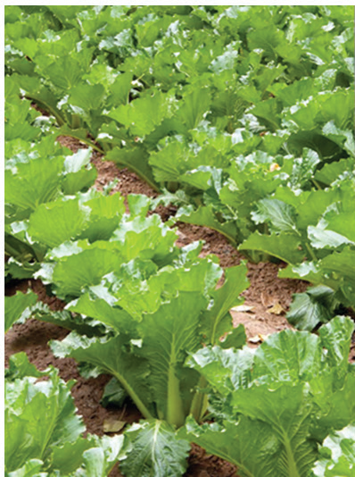
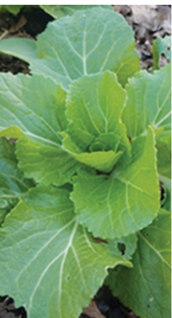
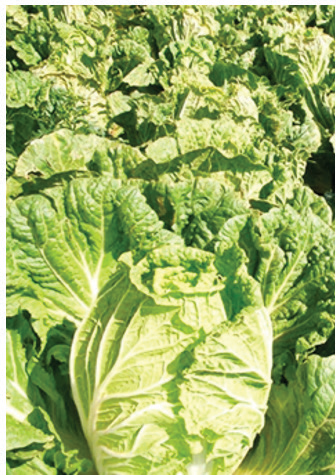
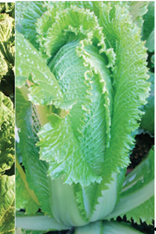

Chapter Six
Production of Chinese cabbage
Getting started with Chinese cabbage production
Chinese cabbage is a type of leafy vegetable. The crop grows quickly and it can be ready in 45, 60 or 80 days. It doesn’t need many resources to grow. It can be eaten in many ways. It can be cooked as a vegetable or used in salads while in raw state. It is full of dietary fibres, and minerals such as calcium, potassium, magnesium, sodium, iron, and zinc. It also contains vitamins such as vitamins A, C, K, and niacin. Chinese cabbage comes in two main types. One type (non-headed) is like a long, thin cabbage. It has a thick, stalk and dark green leaves that can grow up to 30 cm (refer to Figure 6.1 (a)). The other type (head-forming) is different. It forms a head, just like a regular cabbage. It is often cylindrical and elongated (refer to Figure 6.1 (b)).




Planning for Chinese cabbage production
Before starting your Chinese cabbage farm, you should think about a few things. First, decide how much Chinese cabbage you want to produce. Next, choose the type of Chinese cabbage you want to grow. Then, decide when you want to start